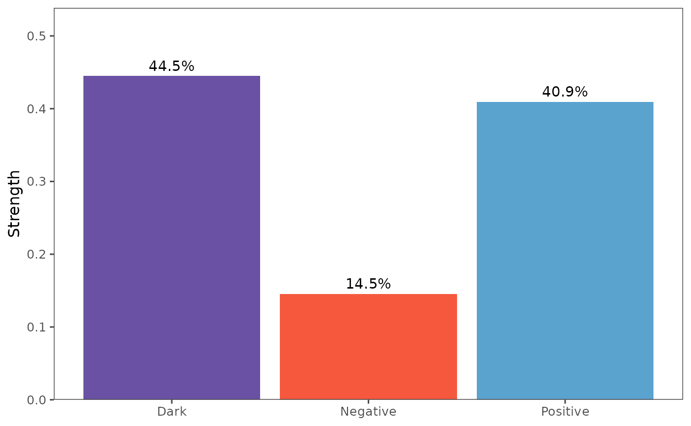

Introduction to patterncausality
Stavros Stavroglou, Athanasios Pantelous, Hui Wang
Source:vignettes/patterncausality.Rmd
patterncausality.RmdPattern Causality is a novel approach for detecting and analyzing causal relationships in complex systems. This method excels at:
- Identifying hidden patterns in time series data
- Quantifying different types of causality (positive, negative, and dark)
- Providing robust statistical analysis of causal relationships
The algorithm is particularly effective for: - Financial market analysis - Climate system interactions - Medical diagnosis - Complex system dynamics
PC in financial market
First of all, we can import the data of AAPL and MSFT, also we can import data from the yahooo api.
library(patterncausality)
data(DJS)
head(DJS)
#> Date X3M American.Express Apple Boeing Caterpillar
#> 1 2000-01-03 47.1875 45.88031 3.997768 40.1875 24.31250
#> 2 2000-01-04 45.3125 44.14794 3.660714 40.1250 24.00000
#> 3 2000-01-05 46.6250 42.96264 3.714286 42.6250 24.56250
#> 4 2000-01-06 50.3750 43.83794 3.392857 43.0625 25.81250
#> 5 2000-01-07 51.3750 44.47618 3.553571 44.3125 26.65625
#> 6 2000-01-10 51.1250 45.09618 3.491071 43.6875 25.78125
#> Chevron Cisco.Systems Coca.Cola DowDuPont ExxonMobil General.Electric
#> 1 41.81250 54.03125 28.18750 44.20833 39.15625 50.00000
#> 2 41.81250 51.00000 28.21875 43.00000 38.40625 48.00000
#> 3 42.56250 50.84375 28.46875 44.39583 40.50000 47.91667
#> 4 44.37500 50.00000 28.50000 45.64583 42.59375 48.55727
#> 5 45.15625 52.93750 30.37500 46.66667 42.46875 50.43750
#> 6 43.93750 54.90625 29.40625 45.47917 41.87500 50.41667
#> Goldman.Sachs IBM Intel Johnson...Johnson JPMorgan.Chase
#> 1 88.3125 116.0000 43.50000 46.09375 48.58333
#> 2 82.7500 112.0625 41.46875 44.40625 47.25000
#> 3 78.8750 116.0000 41.81250 44.87500 46.95833
#> 4 82.2500 114.0000 39.37500 46.28125 47.62500
#> 5 82.5625 113.5000 41.00000 48.25000 48.50000
#> 6 84.3750 118.0000 42.87500 47.03125 47.66667
#> McDonald.s Merck Microsoft Nike Pfizer Procter...Gamble
#> 1 39.6250 67.6250 58.28125 6.015625 31.8750 53.59375
#> 2 38.8125 65.2500 56.31250 5.687500 30.6875 52.56250
#> 3 39.4375 67.8125 56.90625 6.015625 31.1875 51.56250
#> 4 38.8750 68.3750 55.00000 5.984375 32.3125 53.93750
#> 5 39.8750 74.9375 55.71875 5.984375 34.5000 58.25000
#> 6 40.0625 72.7500 56.12500 6.085938 34.4375 57.96875
#> The.Home.Depot Travelers United.Technologies UnitedHealth.Group
#> 1 65.1875 33.0000 31.25000 6.718750
#> 2 61.7500 32.5625 29.96875 6.632813
#> 3 63.0000 32.3125 29.37500 6.617188
#> 4 60.0000 32.9375 30.78125 6.859375
#> 5 63.5000 34.2500 32.00000 7.664063
#> 6 63.1875 33.6250 32.31250 7.531250
#> Verizon Walmart Walt.Disney
#> 1 53.90316 66.8125 29.46252
#> 2 52.16072 64.3125 31.18836
#> 3 53.90316 63.0000 32.48274
#> 4 53.28487 63.6875 31.18836
#> 5 52.89142 68.5000 30.69527
#> 6 52.61038 67.2500 35.37968We can visualize this stock price.

Search the parameters
Then search the best parameters for the PC.
dataset <- DJS[,-1]
parameter <- optimalParametersSearch(Emax = 5, tauMax = 5, metric = "euclidean", dataset = dataset)Calculate the causality
After that, calculate the causality of each status.
X <- DJS$Apple
Y <- DJS$Microsoft
pc <- pcLightweight(X, Y, E = 3, tau = 2, metric = "euclidean", h = 1, weighted = TRUE)
print(pc)
#> Pattern Causality Analysis Results:
#> Total: 0.2755
#> Positive: 0.3997
#> Negative: 0.1521
#> Dark: 0.4482Lastly we can also visualize this result.
plot_total(pc)
plot_components(pc)
Full details
The details could be found with following code.
X <- DJS$Apple
Y <- DJS$Microsoft
detail <- pcFullDetails(X, Y, E = 3, tau = 2, metric = "euclidean", h = 1, weighted = TRUE)
# Access the causality components
causality_real <- detail$causality_real
causality_pred <- detail$causality_pred
print(causality_pred)So far, the whole process of this algorithm has finished.